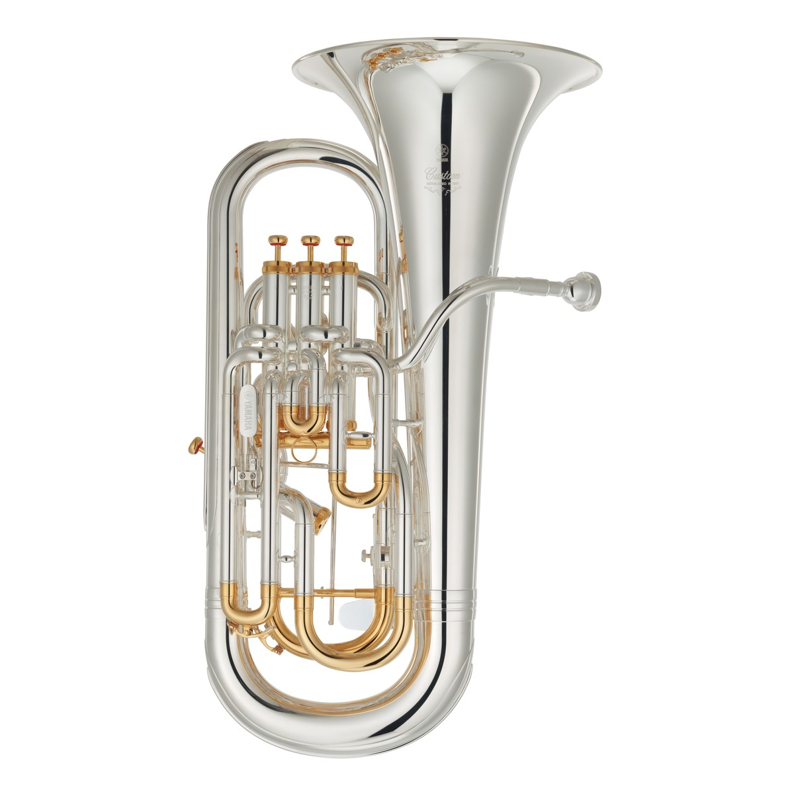
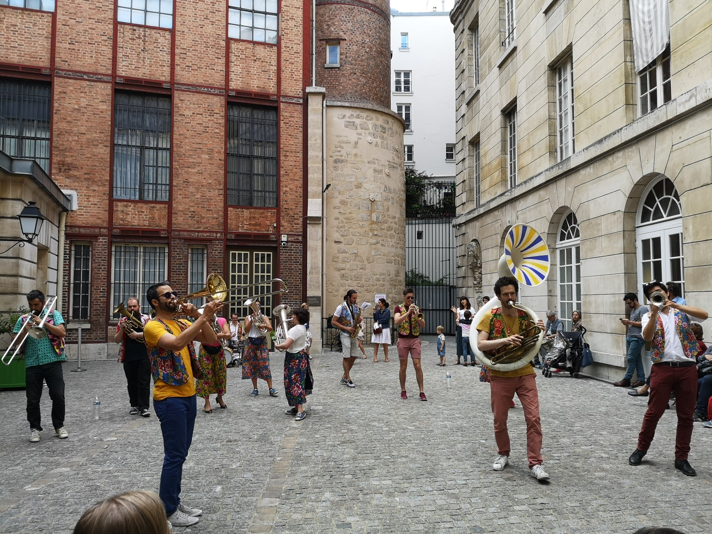
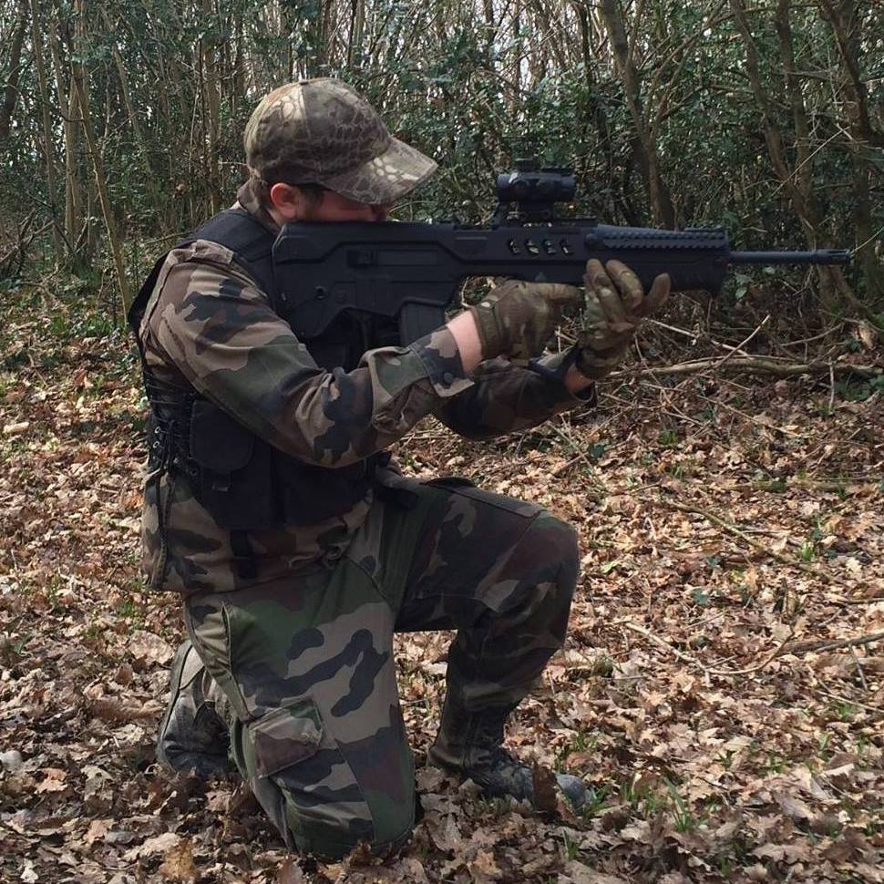
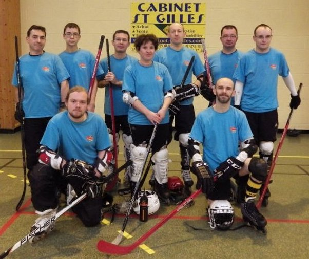

Bercé très jeune dans la musique, j'ai passé toute ma vie autour des instruments à vent et de
la musique. J'ai commencé très jeune a prendre des cours de musique, et bien que je me sois
diversifié, je n'ai jamais arrêté d'en faire.
Je ne pourrais plus vivre sans musique. Elle m'accompagne partout : Travail, révisions...
Jouer de la musique permet aussi de me librérer l'esprit et de m'apaiser. Je me souviens de
la majeur partie des films que je regarde que grâce à leur musique (Les animaux
fantastiques, Avengers : infinity war) pour n'en nommer
que quelques uns.
Dans les parties suivantes, vous pourrez découvrir les principaux instruments que je joue.
Le saxophone est le premier instrument que j'ai joué. Ma grand-mère en faisait, et elle m'a
donné le sien pour que je commence. il ne m'a plus jamais quitté depuis. C'est avec lui que
j'ai découvert ma passion pour la musique.
Malheureusement, comme j'ai commencé très tôt, il
a fallu attendre que j'ai mes dents définitives pour commencer le saxophone ! En effet, Les
vibrations du bec peuvent gêner la bonne pousse des dents. J'ai donc commencé par 2 ans de
flûte a bec, les doigtés pour les notes étant très similaires.
Une fois avoir eu un bon niveau en solfège (éducation musicale pour pouvoir lire et jouer des
partitions), j'ai décidé d'élargir mes horizons. Jouant déjà en orchestre à l'époque, j'ai
été curieux de découvrir la trompette. J'ai donc pris des cours de trompette, et ayant déjà
une connaissance du solfège, j'ai pu atteindre un bon niveau rapidement.
La suite de
l'apprentissage a été plus dure, puisque les deux instruments sont très différents (Bec et
une vongtaine de touches pour un saxophone, embouchure et 3 pistons pour une trompette) La
production du son est radicalement différente et nécéssite un plus grand travail des
abdominaux chez la trompette. J'en ai fait pendant 3 ans, avant de découvrir un autre
instrument, avec lequel je suis tombé amoureux.
Après avoir fait de la trompette, j'ai voulu essayer un instrument proche de la trompette,
mais plus grave au niveau du son. C'est à ce moment que j'ai découvert de saxhorn et
l'euphonium et ai décidé de prendre des cours d'euphonium pendant 2 ans.

J'ai aussi partcicipé à des stage d'été centré autour des saxhorns, euphoniums et tubas. Ce
stage
s'appelle Tubaland, et regroupe un grand nombre de personnes et de professeurs renommés de
France, et quelquefois du monde entier, le tout dans un décor magnifique. Tubaland dure une
semaine, et m'a permis de
progresser d'une façon inimaginable. De plus, tout au long de la semaine, un morceau en
groupe (en TRÈS GRAND groupe) est travaillé, Aindi que plusieurs autres morceaux en groupes
plus réduits. À la fin de cette semaine, un concert gratuit est donné sur place. Un extrait
d'une des années ou j'y étais est disponible ici, et croyez-moi, cela en vaut le détour !
À la suite de ces deux ans, j'ai voulu avoir un instrument qui soit capable de descendre
encore
plus bas dans les octaves. Pour mes 18 ans, ma famille m'a offert un Tuba, et c'est avec cet
instrument que je joue la majeure partie du temps, que ce soit seul ou en groupe.
En plus de Jouer seul, j'ai eu la chance de faire partie de plusieurs ensembles :
L'orchestre de l'école de musique de Saint Aignan de Grand Lieu : J'ai commencé out
d'abord au saxophone, puis à l'euphonium, puis au tuba. Cet orchestre, bien que
municipal, avait un très bon niveau, et j'ai pu m'y épanouir pendant de nombreuses
années, avant de décider d'arrêter pour me concentrer sur mes études.
L'élan de Pont-Saint-Martin : À la fois fanfare et harmonie, j'y suis en tant que
renfort : Je viens s'il manque du
monde et quand j'en ai envie / Quand j'ai le temps. Il y a dans cette emsemble une
ambiance que je ne retrouverais pas ailleurs. L'élan étant constitué de beaucoup de
personnes agées, celui-ci est mis en pause le temps que le coronavirus passe, non sans
prendre son tribut au passage.
Les Jacky Parmentiers : Pendant mon stage de master 2 à Paris, J'ai pu rejoindre une
fanfare parisienne avec laquelle j'ai joué tout au long de ce stage. J'ai pu découvrir
avec eux les répétitions sur le bord de la Seine, et jouer dans des endroit chargé
d'histoire.

Les jacky parmentier à la fête de la musique 2019. Nous avions
joué à 3 endroits différents ce jour-là.
J'ai aussi participé à plusieurs ensemble éphémères : Association avec un ensemble
breton etc..
L'airsoft
Un sport avec une ambiance incomparable

Ça peut faire peur comme ça, mais c'est beaucoup moins violent que le paintball.
J'ai découvert l'airsoft par hasard, à la fac quand j'ai repris contact avec un ancien ami du
collège. Celui-ci m'a expliqué ce que c'était, qu'il le pratiquait avec tous mes anciens amis du
collège avec qui j'avais perdu concact et m'a invité a le rejoindre. Ce qui me plait dans ce sport,
c'est à la fois la tactique, mais aussi le manque de celle-ci. On peut faire ce que l'on veut, du
moment qu'on respecte les règles. Nous avons rejoint un groupe d'adulte pour jouer sur un terrain
privé ou nous avions l'autorisation, et c'était l'un des terrain les meilleurs de la région (ancien
terrain de motocross, beacoup de bosses et de forêts, l'idéal pour faire de l'airsoft). Il a été
rasé depuis pour acceuillir autre chose.
De temps en temps, quand le temps le permet, nous nous rejoignons pour jouer ensemble sur
un terrain de paintball qui lui aussi est idéal pour faire de l'airsoft (beaucoup de
constructions etc.). Il faudra évidemment attendre la fin du coronavirus pour reprendre sereinement
cette activité.
Le fait de jouer avec des personnes adultes, responsables, et qui on le même état d'esprit (pas de
prise de tête, fair-play) nous permet de jouer sereinement et avec une très bonne ambiance. On
pourrait presque comparer notre groupe à une grande famille. Cela permet aussi d'éviter un grand
nombre de problème qui font la mauvaise réputation de ce sport, nottamment les personnes
irresponsables. En effet, bien que les lanceurs soient moins dangereux que les paintball (moins de
force, etc.), ceux-ci peuvent tout de même blesser, nottamment aux yeux et au dents. Une personne
mal intentionnée peut ruiner à elle seule la réputation d'un sport. De plus, certaines répliques ont
l'air réelles, et des personnes irresponsables font quelquefois l'objet de fait divers dans les
journaux (une personne qui se balade avec sa réplique sans sac, etc.)
Comparé au paintball, l'airsoft est aussi plus écologique, puisque la majorité des terrains obligent
l'utilisation de billes bio-dégradables.
Le groupe d'ami au terrain de T-rex 44 paintball
Le roller et le hockey
Très exténuant, mais très fun

Je suis en bas a gauche, c'était l'époque ou j'avais encore des cheveux
Le tout premier sport que j'ai essayé a été le roller de vitesse. J'étais très jeune, et je me suis
vite lassé de ce sport. L'esprit de compétition perpétuel dans ce sport m'a totalement dégoûté de la
compétiton. C'est peut être à cause de cela que je recherche avant tout la bonne ambiance dans un
sport, ainsi que dans un environnement de travail.
Après avoir abandonné le roller de vitesse, je me suis mis au badminton. Ce sport est très rapide et
m'a plu tout de suite. J'ai vite progressé, et ai participer a plusieurs compétitons. Là encore, les
compétitons m'ont dégoûté des compétitons. Les tournois n'avait pas de limite de niveau, et je me
retrouvais en face de personnes qui n'auraient jamais du être autorisées à participer (Joueur de
très haut niveau, gagnant des régionales entre autres).
Après avoir été dégoûté des compétitons encore une fois et ayant senti que j'atteignais un plateau,
je me suis mis au hockey sur roller. J'ai commencé avec les personnes de mon âge (et aussi plus
jeunes), mais ayant appris de mes expériences et sentant la mauvaise ambiance arriver, j'ai décider
de rejoindre la section loisirs du club. J'ai donc rejoint le groupe des personnes adultes, voulant
juste se dépenser dans la bonne ambiance. Ce groupe faisait parti d'un ensemble de plusieurs groupes
de hockey ayant le même but, et nous avons pu organiser des tournois a notre manière, avec nos
propres règles et surtout en gardant la bonne ambiance qui nous était si chère.
Cette bonne ambiance
a commencé à se déteriorer quand un nouveau joueur est arrivé, un ancien coach de hockey sur glace
qui avait peur de reprendre sur la glace après un grave accident suite à une chute. Cette personne
essayant de changer la façon dotn le groupe jouait afin de le rendre plus compétitif, j'ai décidé de
quitter ce sport afin de me concentrer pleinement sur mes études.